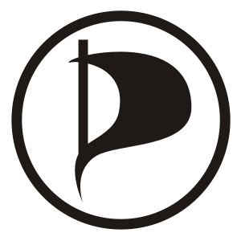
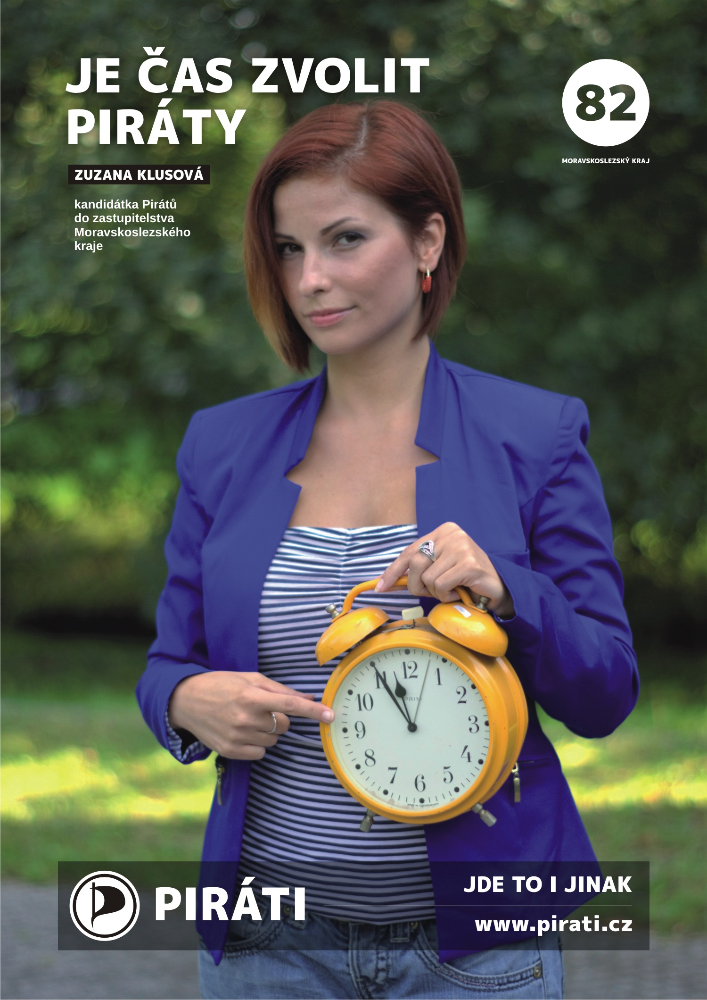

<div id="fb-root"></div>
<script>(function(d, s, id) {
  var js, fjs = d.getElementsByTagName(s)[0];
  if (d.getElementById(id)) return;
  js = d.createElement(s); js.id = id;
  js.src = "//connect.facebook.net/cs_CZ/all.js#xfbml=1";
  fjs.parentNode.insertBefore(js, fjs);
}(document, 'script', 'facebook-jssdk'));</script>

<div id="obsah">

<div id="hlavicka">
<div id="menu">
	<a href="msk-program.html" title="Program Pirátů pro Moravskoslezský kraj 2016">krajský program</a>
	 | <a href="msk-kandidati.html" title="Kandidáti Pirátů pro zastupitelstvo Moravskoslezského kraje / 2016">krajští kandidáti</a>
	 | <a href="msk-senat2016.html" title="Kandidáti Pirátů v Moravskoslezském kraji pro senátní volby 2016">kandidáti do Senátu</a>
	 | <a href="http://msk.pirati.cz" title="Oficiální internetová prezentace České pirátské strany, Krajské sdružení Moravskoslezského kraje">msk.pirati.cz</a>
	 | <a href="http://pirati.cz" title="Oficiální internetová prezentace České pirátské strany">pirati.cz</a>
</div>
<h1><a href="./">PIRÁTI</a> <span id="komunalky">v Moravskoslezském kraji</span></h1>
</div>

<hr class="cleaner" />
<div id="hlavnipanel">
<p class="logo"></p>
<h1 align="center">Krajské a senátní volby 2016 v Moravskoslezském kraji</h1>
<h3 align="center" id="sedy-rozcestnik">
	<a href="msk-program.html" title="Program Pirátů pro Moravskoslezský kraj 2016">krajský program</a>
	 | <a href="msk-kandidati.html" title="Kandidáti Pirátů pro zastupitelstvo Moravskoslezského kraje / 2016">krajští kandidáti</a>
	 | <a href="msk-senat2016.html" title="Kandidáti Pirátů v Moravskoslezském kraji pro senátní volby 2016">kandidáti do Senátu</a>
<p align="center"><a href="prvky/za-5-minut-12.jpg" target="new"></a>
</h3>
</div>

<hr class="cleaner" />
<!-- začátek socialni-prvky G+ a FB -->
 <div id="socialni-prvky">
<!-- socialni-prvky G+ -->
<g:plusone annotation="inline"></g:plusone>
<script type="text/javascript">
  (function() {
    var po = document.createElement('script'); po.type = 'text/javascript'; po.async = true;
    po.src = '//apis.google.com/js/plusone.js';
    var s = document.getElementsByTagName('script')[0]; s.parentNode.insertBefore(po, s);
  })();
</script>
<br />
<!-- socialni-prvky FB -->
<div class="fb-like" data-href="http://www.volimpiraty.cz<?php echo $_SERVER['REQUEST_URI']; ?>" data-send="true" data-width="450" data-show-faces="true" data-font="arial"></div>
</div>
<center>
<div class="fb-like-box" data-href="https://www.facebook.com/cpsmsk" data-width="450" data-colorscheme="light" data-show-faces="true" data-header="false" data-stream="false" data-show-border="false"></div>
</center>
<!-- konec socialni-prvky G+ a FB -->
<br /><br />
</div>

<div id="spodni-info">
<span style="-webkit-transform:rotate(180deg);-moz-transform:rotate(180deg);-o-transform:rotate(180deg);-khtml-transform:rotate(180deg);-ms-transform:rotate(180deg);transform:rotate(180deg);display:inline-block;font-size:1em">©</span>
Piráti, 2014. Všechna práva vyhlazena. Sdílejte a nechte ostatní sdílet za stejných podmínek. <a href="http://www.pirati.cz/web/podminky">Podmínky použití</a>.<br>
</div>
